To publish and run Fuse SwitchYard projects on an installed Fuse server, you must first add the server and its runtime definition to the tooling's Servers list. Once added to the list, the server appears in the Servers view, where you can configure it, start and stop it, and publish projects to it.
You can publish SwitchYard projects to JBoss Fuse 6.3 and newer servers that you have defined and added to the Servers list.
![[Note]](imagesdb/note.png) | Note |
|---|---|
If you haven't already installed a server, you can do so when you define and add it to the Servers list. |
Follow the instructions in Adding a Server to define and add an installed JBoss Fuse 6.3 server.
JBoss Fuse is SwitchYard-ready, but you have to install the switchyard features.
In the Servers view, select the JBoss Fuse server you just added, and click
 on the view's menu bar to start it up.
on the view's menu bar to start it up.Console view opens and displays the server's startup progress:
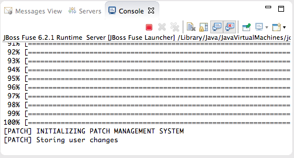Wait until
[PATCH] Storing user changesappears at the end of the output.Switch to Shell view, and install the
switchyard-*features, one after another, on the server:JBossFuse:admin@root> features:install switchyard-bean JBossFuse:admin@root> features:install switchyard-camel JBossFuse:admin@root> features:install switchyard-soap
Note To see a list of all available SwitchYard-related features, enter
features:list | grep switchyard*.Check that the
switchyard-*features are installed and active:JBossFuse:admin@root> osgi:list
The end of the output should show the switchyard components installed and active :
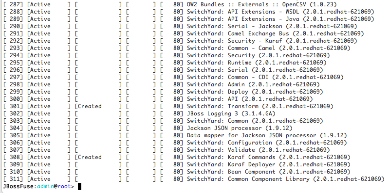
The SwitchYard quickstarts are installed in
$FUSE_HOME/quickstarts/switchyard/.
Right-click in Project Explorer, and select > to open the Choose Import source dialog.
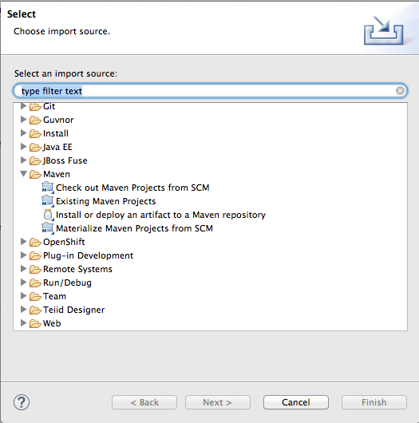In the Maven folder, select Existing Maven Projects.
Click to open the Select Maven projects dialog.
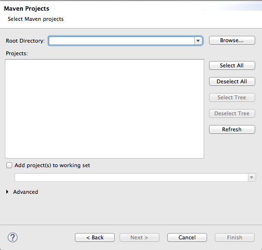Click the button next to the Root Directory field to locate and select the
$FUSE_HOME/quickstarts/switchyard/bean-service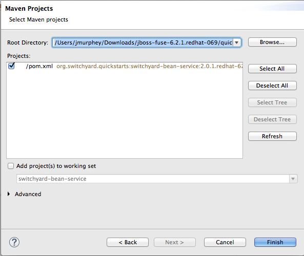In the Projects pane, make sure the box next to the
pom.xmlfile entry for theswitchyard-bean-serviceis checked to select it.Click to start the import.
The
switchyard-bean-serviceproject appears in Project Explorer.Wait a moment for the import process to finish.
Note See Resolving Maven dependency errors for details on what to do if you encounter Maven dependency errors, caused by failure to download all of the project's dependencies from the Maven repositories.
In Project Explorer, right-click the
switchyard-bean-serviceproject to open the context menu, and select .This option enables you to publish a switchyard project to the JBoss Fuse server, which you can do at any time now (for details, see Publishing a SwitchYard project to the server).
It's a good idea to run projects as a JUnit test to check that they successfully build and run locally. The provided test files included with each SwitchYard quickstart are complete and comprehensive and need no modification.
In Project Explorer, expand the
switchyard-bean-serviceproject to exposesrc/test/java/OrderServiceTest.javafile.If you want to take a look at the test code, double-click the file to open it in the Java editor.
In Project Explorer, right-click the
OrderServiceTest.javafile to open the context menu, and select > .Console view automatically opens and displays the log entries generated by the JUnit test.
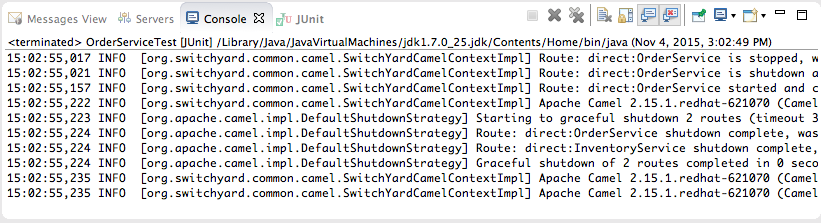The last two log entries indicate that the test ran successfully against Apache Camel as expected.
Click the JUnit tab to open JUnit view.
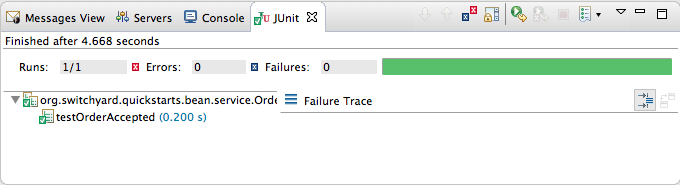This test proves that the
switchyard-bean-servicesuccessfully builds and runs locally.Note If you failed to set the Execution environment to JavaSE-1.7 or JavaSE-1.8 when you defined the JBoss Fuse server, this test will fail. You can easily reset it by right-clicking the
JRE System Librarynode in Project Explorer, and selecting > . In the Java Build Path dialog's Library tab, edit the current library to change the Execution environment setting to JavaSE-1.7 or JavaSE-1.8. (The library you select must be installed on your machine.) Then rerun the test.
You can publish a project to a supported server, defined and listed in the Servers view, whether it's running or not. A published project will run as scheduled according to the server's settings (for details, see Publishing Fuse Integration Projects to a Server).
In the Servers view, right-click the target server to open the context menu, and then select .
When a project is ready for publishing, it appears in the Available column. For example:
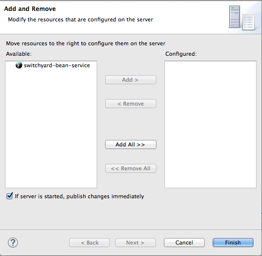Note The option If server is started, publish changes immediately is enable by default. See Publishing Fuse projects automatically when resources change for information on how this option works and on using other publishing options.
Double-click the project in the Available column to move it to the Configured column.
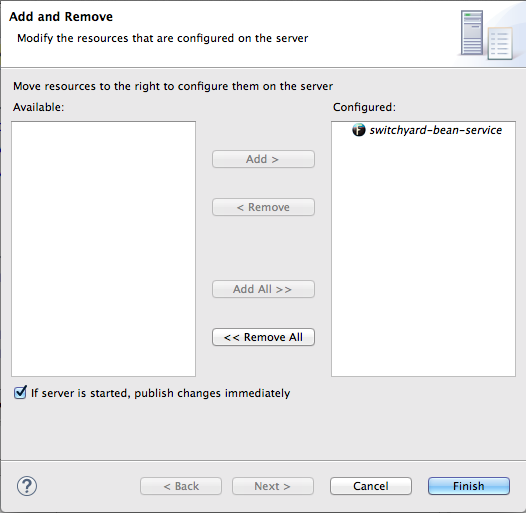Click .
Once publishing has finished, the project appears as a node under the server runtime node in the Servers view.
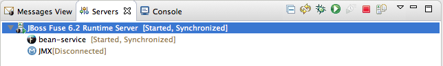Servers view shows that both the server runtime and the project are started and synchronized.
Note For a server runtime, Synchronized means that all published resources on the server are identical to their local counterparts. For a published resource, Synchronized means that it is identical to its local counterpart.
In Shell view, enter the command osgi:list to confirm that the
switchyard-bean-serviceproject is installed and active.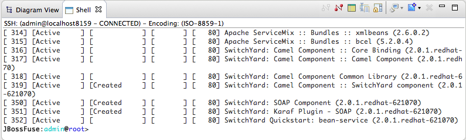
You can use the JBoss Web Service Tester tool to test your published web service.
Open a web browser, and go to
http://localhost:8181/cxf/to see the available SOAP services with OrderService in the list.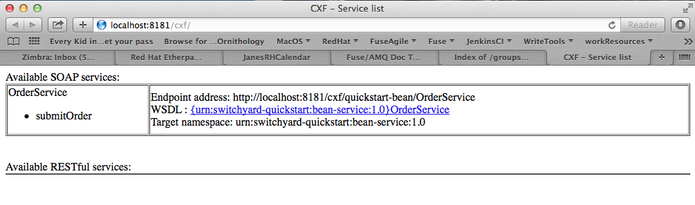This site provides a link to the OrderService's WSDL.
Click the link to the OrderService's WSDL to open it in the browser.
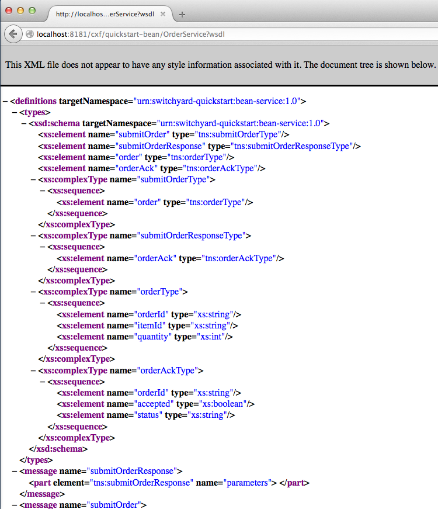Copy the URL displayed in the browser's address field.
In JBoss Developer Studio, click > > , then scroll down to the JBoss Tools Web Services folder, and select .
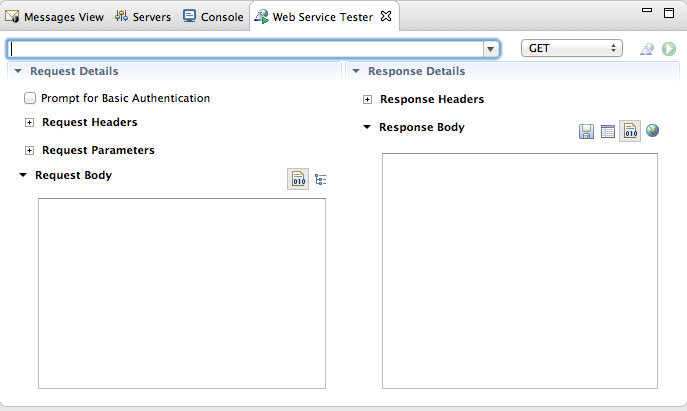Click the drop-down menu labeled GET, and select .
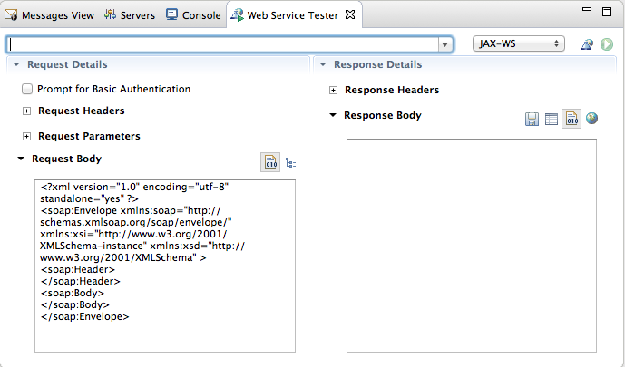The Request Body pane displays an example SOAP request message.
Click next to
 to open the Specify the Source WSDL for the Web
Service dialog, and then paste the URI you copied in Step 3 into the WSDL URI
field.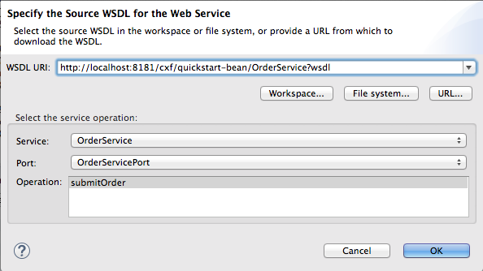
to open the Specify the Source WSDL for the Web
Service dialog, and then paste the URI you copied in Step 3 into the WSDL URI
field.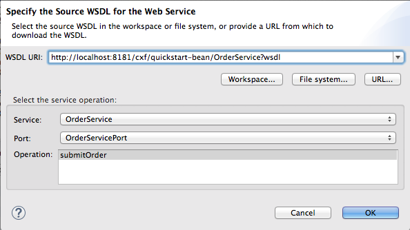The auto fills the remaining fields with the data retrieved from the WSDL.
Click .
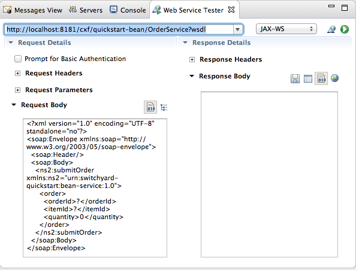The Web Service Tester displays the XML request message retrieved from the WSDL in the Request Body pane.
You can enter values for the
<order>items<orderId>,<itemId>, and<quantity>to test the project's request and response services.Note You can discover what the data types are for each order item. In Project Explorer, double-click
src/test/java/OrderServiceTest.javafile to open it in the Java editor: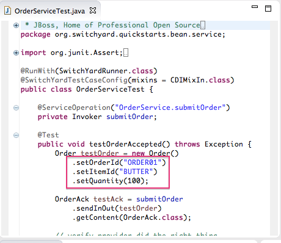In the Request Body pane, click the value field of each order item and enter an appropriate value for it. For example:
For <orderID> replace
?withORDER10For <itemId> replace
?withBUTTERFor <quantity> replace
0with1000
Click
to the right of to invoke the submitOrder operation. and
populate the Response Body pane with an example response
message.Console view automatically opens to show the status of the submitOrder operation:
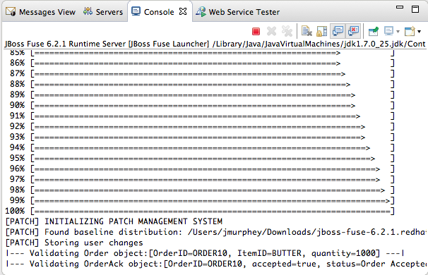Switch to the Web Service Tester tool and check the response message in the Response Body pane.
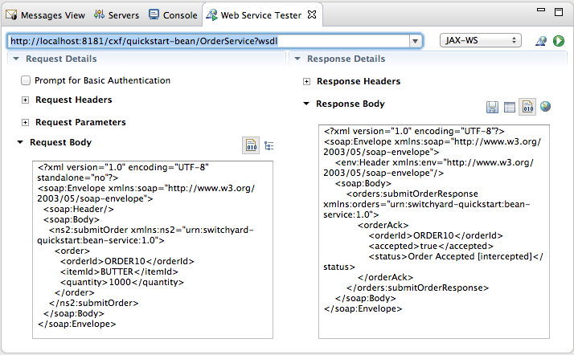